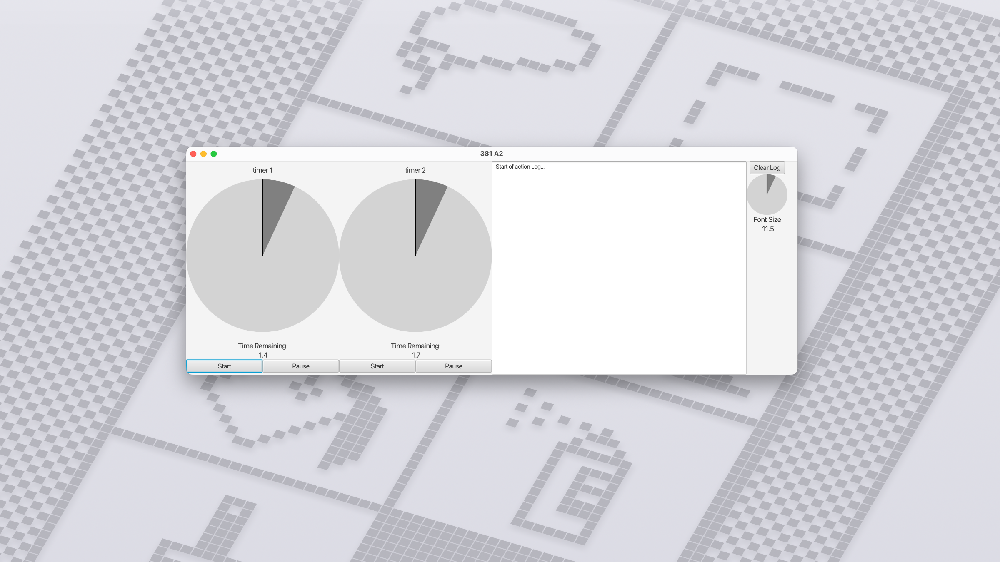
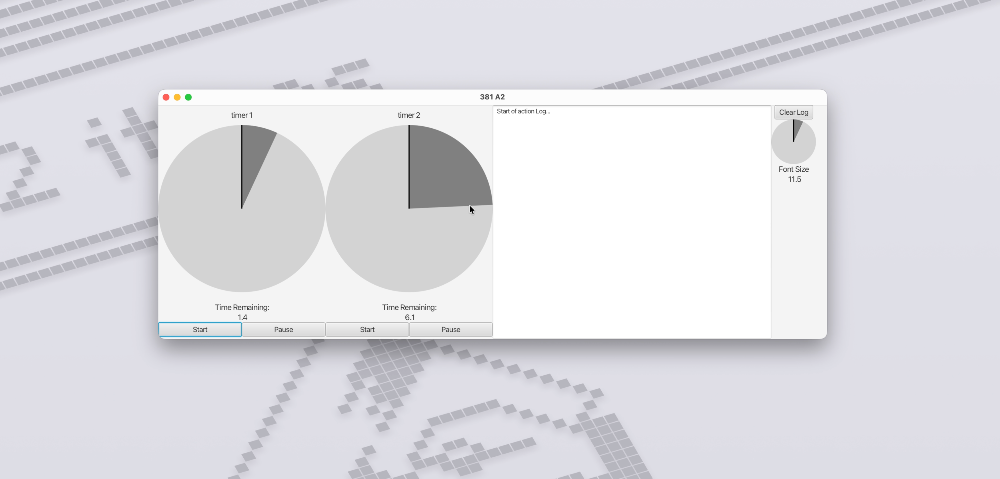
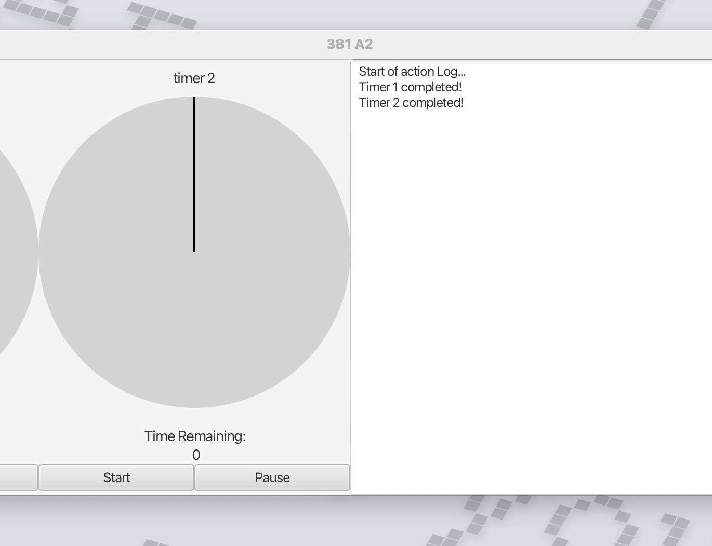
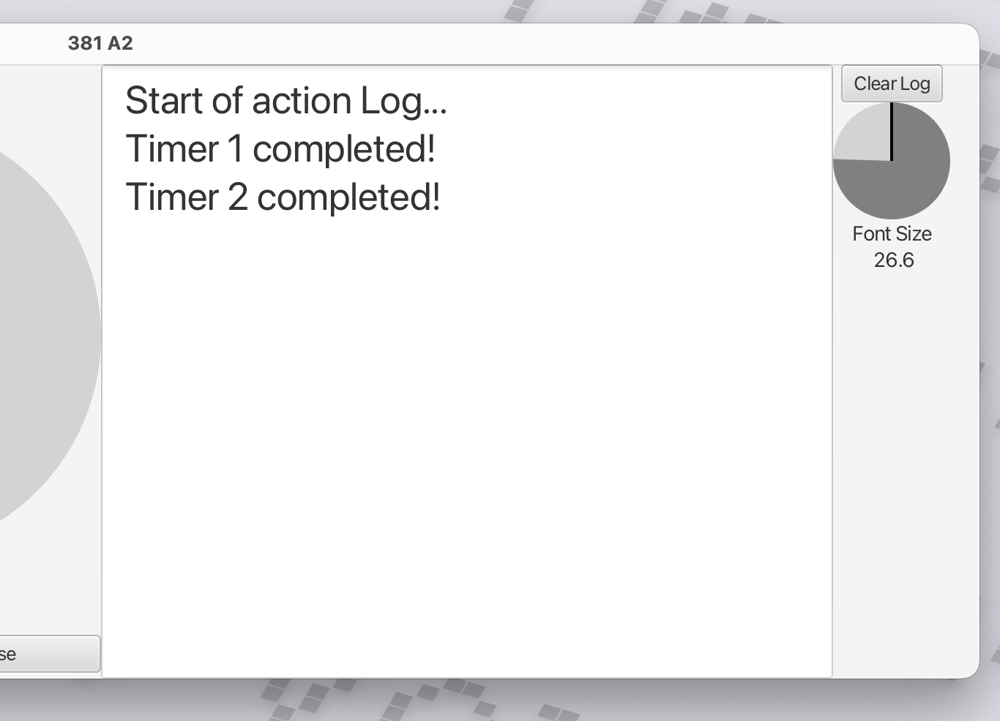

Composite Widgets

This application is a JavaFX desktop program that shows a control panel with two countdown timers and an activity log on the side. Each timer is built as a custom dial control that users set by clicking and dragging around a circle, like turning a clock hand, and the app then counts down the seconds while updating the display in real time. The timers run in the background so the countdown keeps ticking smoothly, and when a timer finishes, it automatically adds a message to the log panel, which is also resizable so it can grow or shrink smoothly with the window. The interface is built by combining smaller custom widgets (a log panel, an arc-shaped control, and a dial display) into bigger ones, a method called composite widgets, so parts of the screen can be reused just like normal buttons or sliders.


